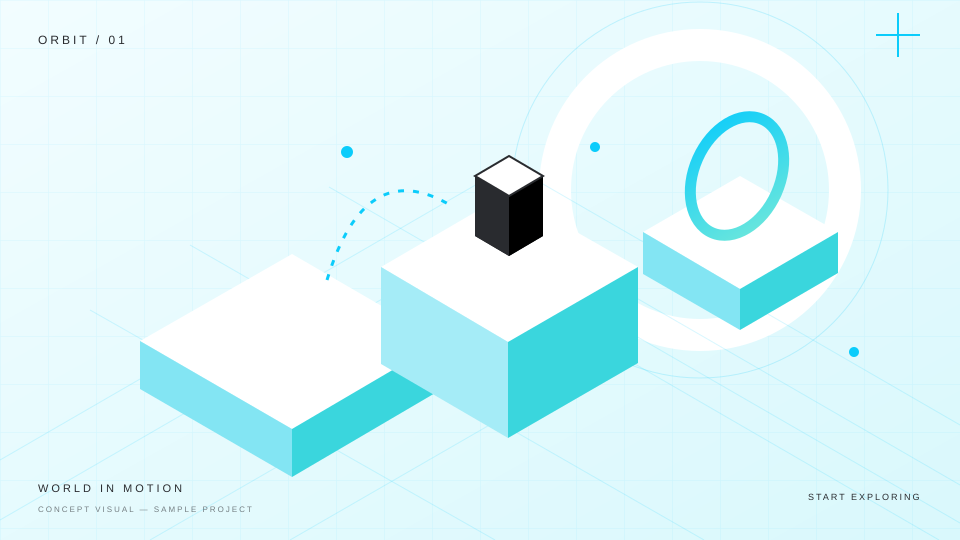

触って気持ちいい体験を。
入力への反応、キャラクターの動き、画面の変化。小さな手触りまで考えたゲームをつくっていきたいです。

01 / PROFILE
HARUKI YOKOYAMA
ゲームプログラマーを目指して。
HAL東京 ゲーム4年制コース ゲーム制作学科に在籍。
ゲーム制作を通して、プログラミングを学んでいます。
02 / SKILL
使用経験のある技術を掲載しています。具体的な担当機能は各作品で紹介予定です。
03 / WORKS
遊びの体験と、それを支える実装。
DRAG TO EXPLORE
01/04
04 / ABOUT
ゲームづくりで大切にしたいこと。
以下は紹介文の仮原稿です。入力への反応、キャラクターの動き、画面の変化。小さな手触りまで考えたゲームをつくっていきたいです。
試して、直して、また試す。その繰り返しを支えられるように、機能の役割が分かるコードを目指します。
動いた理由も、動かなかった理由も確かめる。気づきを次の制作に活かしながら、できることを広げていきたいです。
05 / CONTACT
ご覧いただき、ありがとうございます。
制作や技術について、お話しできることを楽しみにしています。